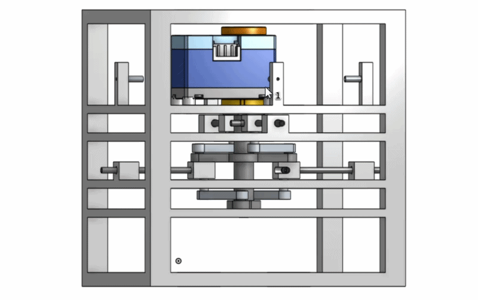
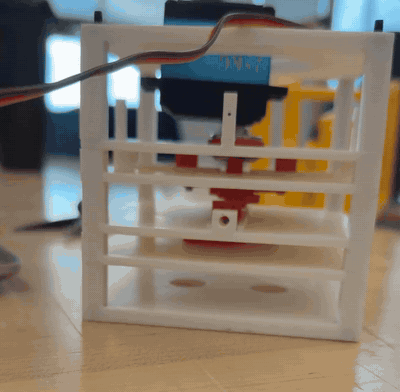
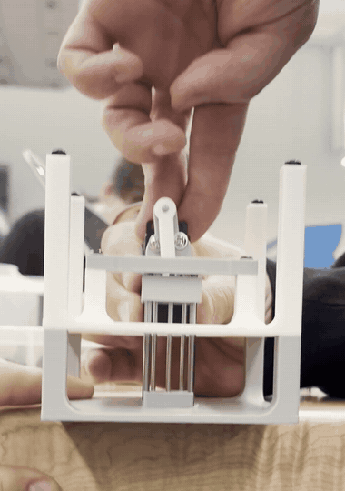

Kent State Rocket Team · 2027 IREC payload
Pitot deployment mechanism
One servo moves all the probes through a crank, a link and a carriage on two guide rods

- My role
- Payload Subsection Lead; mechanism designer
- Team
- 6-member subsection
- Dates
- Aug 2026 to present
- Status
- PLA+ prototype printed · not flown
Specs
Drives every probe through a crank, a link and a carriage on two guide rods
Straight stainless pitot probes; the final count is still open
CubeSat-format weather station payload
- Spaceport America Cup, summer 2027. The flight payload has not been built or flown.
- IREC 2027target
Context
The team's 2027 payload is a weather station in a 4U CubeSat form factor. It is released at 1,000 ft above ground and hangs below its tether during descent. My subsection is responsible for the mechanism that pushes the pitot probes out into the airflow after release and pulls them back in before landing.
The probes measure descent speed. The original goal was wind speed from each side. After a review with a Kent State faculty member, the team concluded that reading wouldn't be accurate enough, so the probes now face down into the airflow as the payload descends. Combined with pressure altitude, that gives the weather station data on an altitude basis.
Requirements
The atmospheric payload's requirements are section 2.4.2.6 of the team's 2026–27 requirements document, written by the senior design team. I worked with the senior payload lead on the functional decisions behind them. They were written when the pitot probes were meant to read wind.
* = working requirement. This is the wording the payload team is designing to now. It is not in the official requirements document yet; the official wording is shown underneath.
- 2.4.2.6.1* · The payload shall extend pitot probes below its base into the airflow to measure its descent rate.Official: extendable pitot tube for accurate data measurements
- Changed*probes measure descent rate
- 2.4.2.6.7* · The payload shall estimate wind speed during descent from its GPS track.Official: determine wind speed during descent
- Changed*estimated from GPS
- 2.4.2.6.8* · The payload shall estimate wind direction during descent from its GPS track.Official: determine wind direction during descent
- Changed*estimated from GPS
- 2.4.2.6.9 – .10* · Orientation and heading during descent.Official: needed to interpret wind measurements
- To revisit*written for the pitot wind method
Still in force for the current design:
- Start collecting data after deployment and keep going until touchdown (2.4.2.6.2 – .3).
- Measure temperature, humidity and pressure during descent, and determine altitude (2.4.2.6.4 – .6, .11).
- Timestamp every measurement and store it onboard for retrieval and analysis (2.4.2.6.12 – .14).
- Switch from stowed to data collection on its own after deployment, with no commands from the ground (2.4.2.6.15 – .16).
None of these are verified yet. The payload hasn't been built or flown.
What I did
- I lead the 6-member payload subsection through design, fabrication and integration, working from the senior payload lead's direction.
- I designed both revisions of the deployment mechanism in Onshape.
- I worked out the loads by hand: how much force a stalled servo puts into each part at different points in its travel.
- I set up the linkage FEA in Onshape and compared the first run with those hand calculations.
Design process
-
01 · Concept
Wind speed from four directions
Four pitot probes pointing out of the four sides of the payload, one per direction. This is the concept the team requirements were written for: 2.4.2.6.7 and 2.4.2.6.8 call for wind speed and wind direction during descent. Those requirements stayed; wind is now roughly estimated from GPS, and the probes moved to descent speed.
Why it changed: the faculty review concluded the wind reading wouldn't be accurate enough. The goal became descent speed, which needs probes pointing down.
-
02 · First mechanism
Four probes out of the sides

First design · Onshape CAD 
Printed prototype · PLA+ · servo-driven on the bench One servo turns a central hex hub through 90 degrees. The hub drives four arms on two levels; each arm pushes a sled carrying one stainless probe out through the payload wall.
Why it changed: to read descent speed, each probe tip had to be bent 90 degrees to face down. A hand-bend trial kinked the tube, and every bent tip also needed its own pocket in the frame and slot in the metal chassis.
-
03 · Current revision · Nov 2026
Straight probes out of the bottom
One servo turns a crank. A link drives a carriage down two steel guide rods, and the carriage pushes straight probes through a guide in the base plate, so they come out already pointing into the airflow. A bridge across the top holds the guide rods' free ends.
With straight probes there is no tube bend, no wall pockets or chassis slots, and nothing needed to hold each tip's direction. The current model carries three probes, and the count is still open. I printed a PLA+ prototype and ran it on the servo. The servo mount isn't designed yet, so the servo is held by hand in the video. It hasn't been through team review.

Printed prototype · PLA+ · servo-driven, held by hand (no servo mount yet)
Analysis
The largest load the mechanism can put on itself comes from the servo stalling against a jam, such as a stuck probe. I'm working out the force on each part from a moment balance on the crank: the servo torque equals the link force times its lever arm about the servo axis.
That lever arm changes with crank angle. Near the stowed end the link points almost through the servo axis, so the force on the link, crank and pins is much higher there than mid-stroke.
I'm checking the FEA against hand calculations, starting with the link, before using it to choose materials. The first run points to the pin holes as the weak spot.
FEA is in progress. No results are final, no material is chosen, and nothing has been load tested.
Design notes
- Once the goal became descent speed, pointing the whole mechanism down removed the tube bend, which was the hardest part of the first design.
- I compared the first FEA run with a hand calculation somewhere simple (the link body) before reading the stress somewhere complicated (the pin holes).
- I first took mid-stroke as the worst jam. The geometry near the stowed end multiplies the servo's force about ten times.
Status
| CAD (Onshape) | Bottom-deploy revision modeled |
|---|---|
| Team review | Not yet |
| Load hand calculations | Done for stall jam cases |
| Linkage FEA | In progress, first run done |
| Material choice | Not decided |
| Prototypes | Both designs printed in PLA+, servo-driven on the bench |
| Servo mount | Not designed yet |
| Flight hardware and load testing | Not started |
| Launch | IREC, summer 2027 |
| Flight data | None, not flown |
PLA+ prototypes printed and servo-driven on the bench. FEA in progress with no final results. Flies at IREC in summer 2027. No flight data.